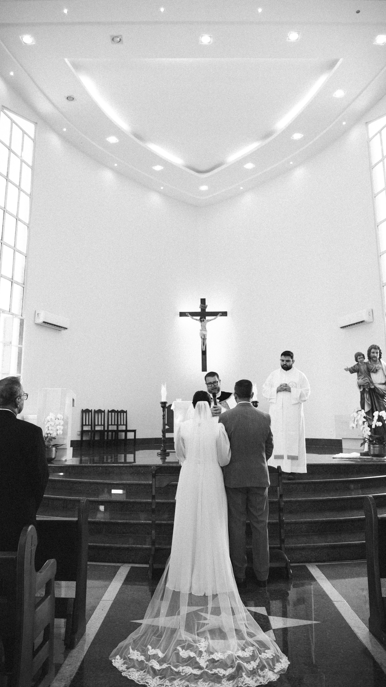
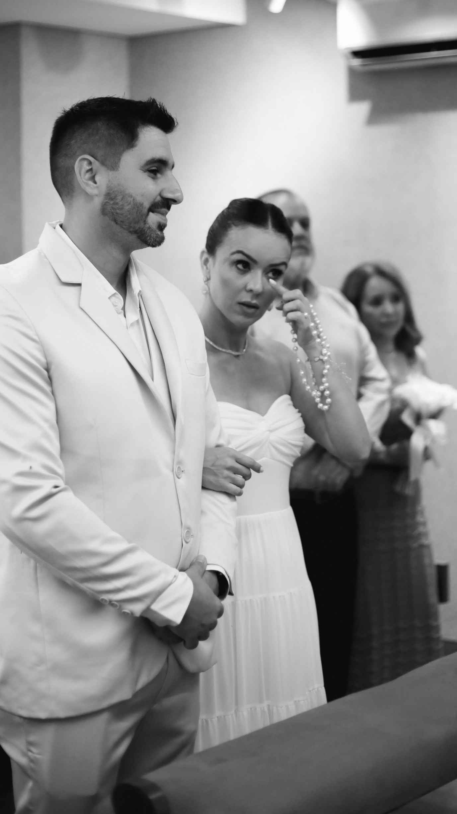
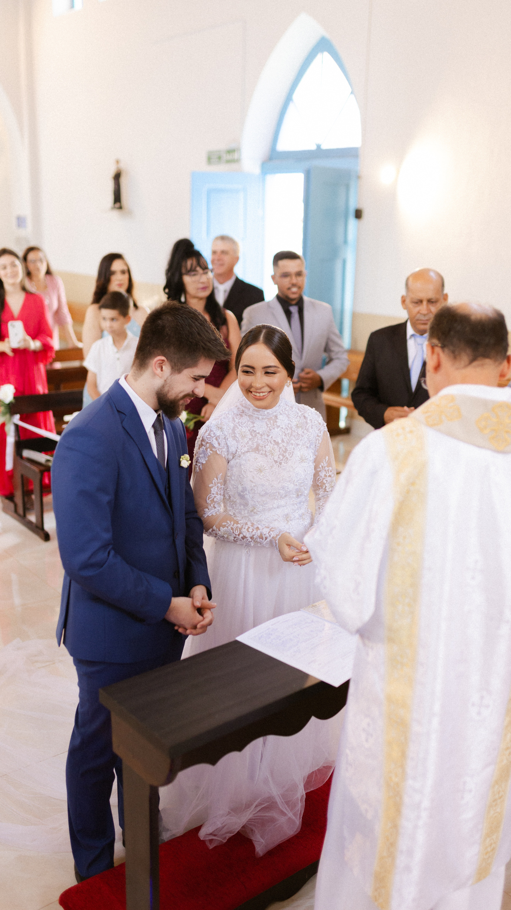
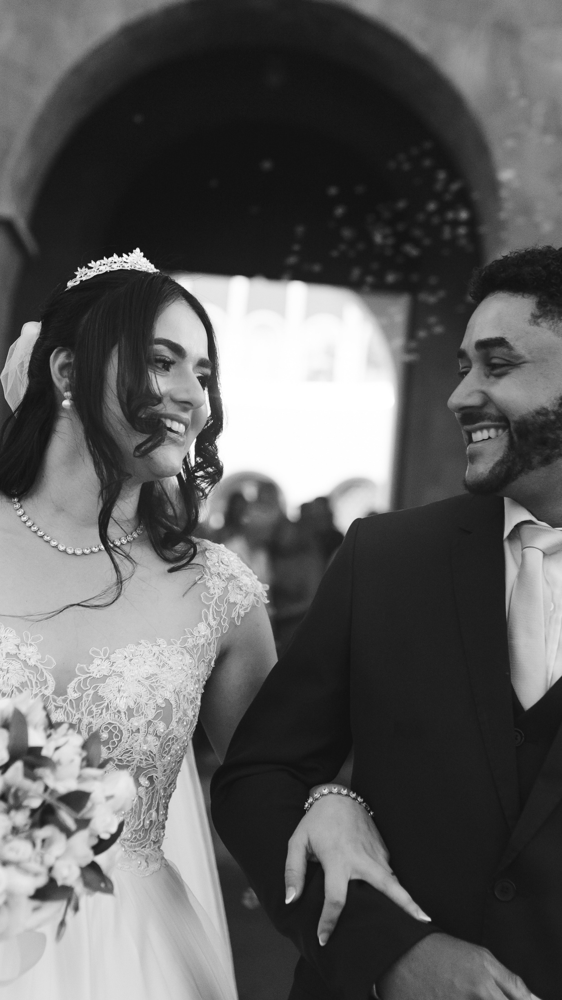

Íntimo
Casamentos de até 80 convidados- 1 fotógrafo JL
- Cobertura da cerimônia
- Retratos dos noivos após a celebração
- Fotos essenciais com pais e padrinhos
- Galeria online
- Até 150 fotografias digitais editadas
R$ 890
4x de R$ 222,50 sem jurosFotografia de casamento para quem quer lembrar não só de como o dia parecia, mas de como ele foi sentido — da espera antes da cerimônia à última celebração da noite.
Conhecer experiênciasEnquanto vocês vivem o altar, existem mãos apertadas, pais emocionados, amigos comemorando, detalhes da decoração e encontros que duram poucos segundos. Nosso trabalho é construir uma narrativa completa desse dia sem transformar a celebração em uma sessão de fotos.





Uma cerimônia intimista e uma festa com centenas de pessoas exigem coberturas diferentes. Quanto maior o casamento, maior é a circulação, o número de grupos importantes, os acontecimentos simultâneos e o tempo necessário para contar a história com calma.
Por isso nossos pacotes consideram o porte do casamento. Isso permite dimensionar a cobertura para que os noivos, família, padrinhos, convidados e os principais momentos da recepção não disputem espaço dentro do registro.
Os valores crescem junto com o porte do casamento, o tempo de cobertura, a equipe e a experiência de entrega.
Nos casamentos maiores, dois olhares ajudam a registrar acontecimentos simultâneos e as reações que cercam os noivos.
A história começa antes do altar. Preparação, detalhes, vestido e encontros da família passam a fazer parte da narrativa.
No Legado, o álbum 30×30 e o quadro 70×60 transformam as fotografias em peças físicas da história da família.
Somos a dupla por trás da JL Fotografia. Fotografamos juntos porque acreditamos que um casamento merece mais de um ponto de vista: enquanto um acompanha o que está diante dos noivos, o outro consegue perceber a reação dos pais, o abraço dos amigos e aquilo que acontece discretamente ao redor.
Queremos que vocês tenham fotógrafos presentes quando necessário e discretos quando o momento pede. A prioridade é que o casamento seja vivido de verdade.

Reservamos este espaço para três casamentos completos. Cada trabalho terá sua própria página, com uma seleção maior de imagens e a história daquele dia.
R$ 100 de sinal para bloquear a data. O restante deve ser quitado até o casamento.
Até 4x sem juros no cartão ou até 12x com juros. Pagamento à vista tem 5% de desconto.
O material é organizado em galeria online e recebe tratamento seguindo a identidade da JL Fotografia.
Álbuns e quadros passam por aprovação quando aplicável e possuem prazo próprio de produção.
Conte a data, o local e uma estimativa de convidados. A partir disso, ajudamos vocês a encontrar a cobertura que faz sentido para o casamento.
Consultar minha data